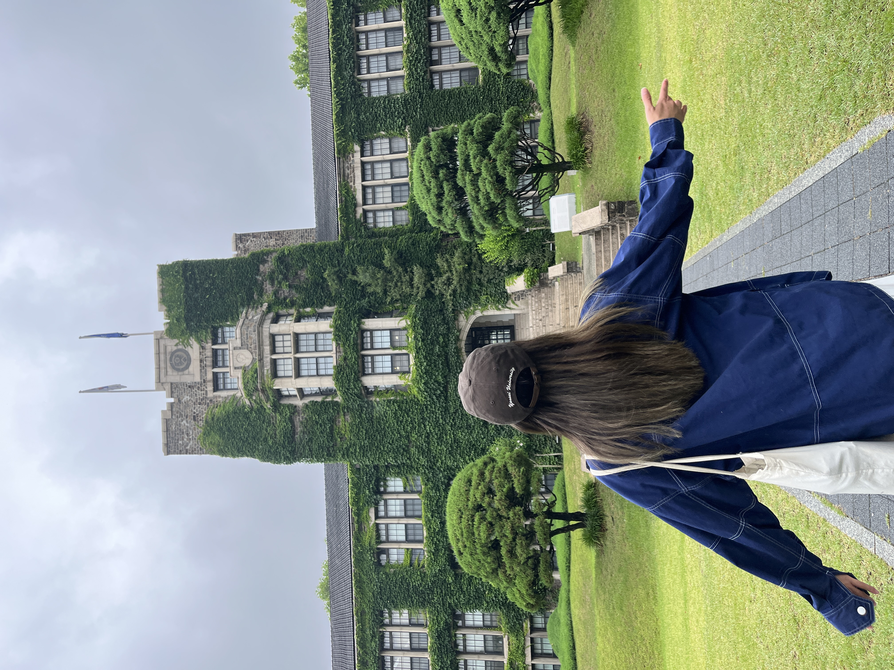
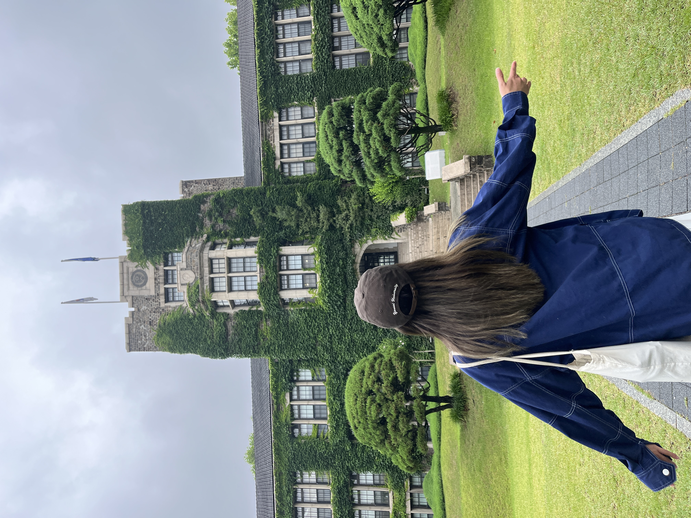

about me
Hi! My name is Kim Pham and am currently an upcoming graduate, majoring in Management Information Systems at San Diego State University (SDSU).
I also studied abroad during my spring 2023 semester at Yonsei University in South Korea.
Apart from my academics, I'm currently a student analyst for the IT User Services Help Desk at SDSU, where I serve as the first-hand technology support for the university's faculty, staff, and students. Every day, we troubleshoot various IT-related issues, assist with software licensing, and manage user access and permissions via identity and access management systems.
Starting from when I took AP Computer Science in high school, I have always enjoyed experimenting and tinkering with code and observing the outcomes that emerge, such as building a program that produces a list of the most recent earthquakes in America using public APIs.
However, I also took an interest in digital media when I started experimenting with the Adobe suite and loved how I was able to explore my creative and artistic side without needing the ability to perfectly draw a circle on a piece of paper.
With these interests in mind, I decided to major in Management Information Systems to also allow myself to experiment and learn more technical and business-related skills. Understanding this versatility gave me comfort knowing that I had the opportunity to explore various career options.
Currently, I am invested in expanding my web development skills, so I can challenge myself to organize information/data along with integrating design aspects to, ultimately, improve the user experience.
 
